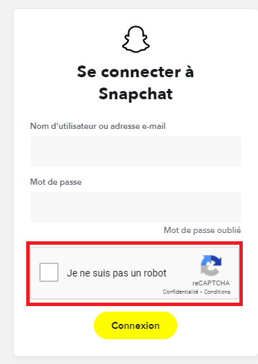
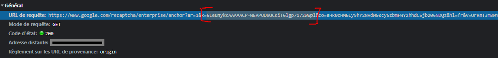
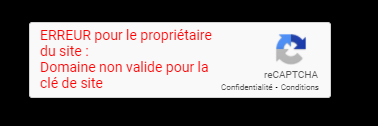
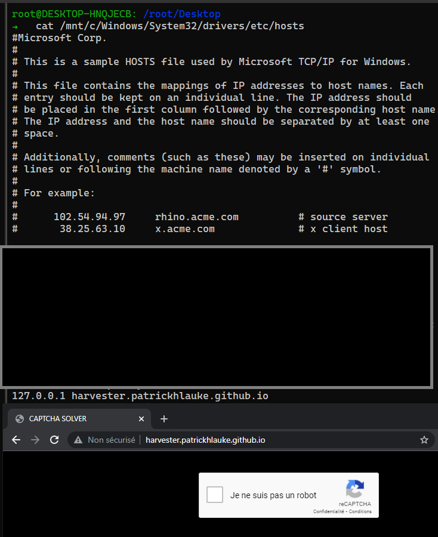
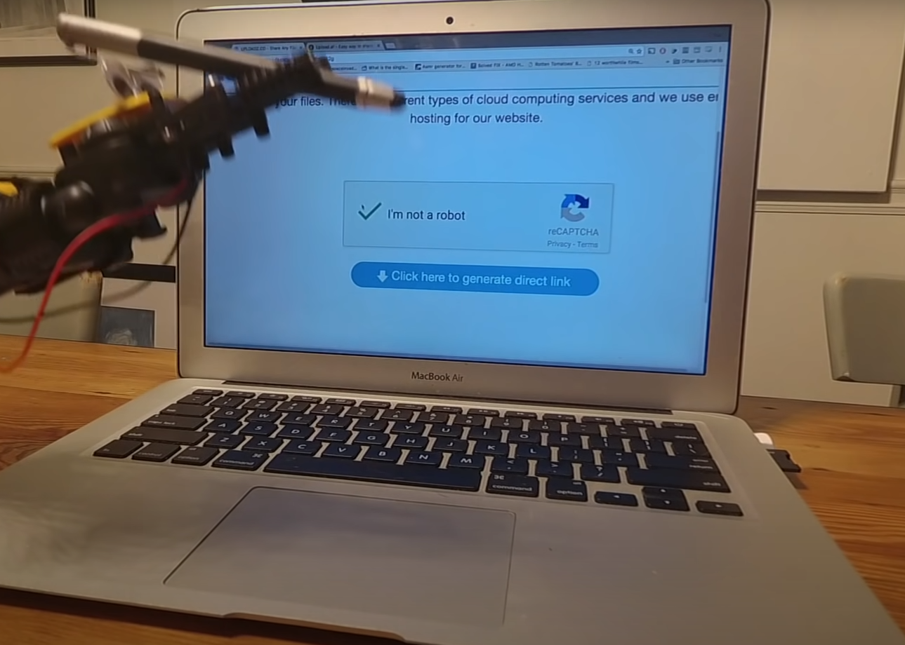

Comment Isoler un Recaptcha
Planted October 28, 2021
Introduction
Nous avons vu dans un précédent comment bypass les reCAPTCHA Silencieux ; ceux en arrière-plan . Mais comment faire quand ces captchas nécessitent une interaction Humaine à tout prix ? C’est ce que nous allons découvrir.

Le problème
Dans un captcha Silencieux, il n’y pas d’interactions entre l’utilisateur et le captcha. On peut donc le contourner en simulant des actions identiques au script natif. Par contre, dans un captcha visible. Tous changent … Le payload généré et envoyé dépend des images cliquées. On ne peut donc pas générer une Template de post-data comme précédemment. (Voir ici)
On va donc essayer d’isoler cette technologie pour faciliter la génération de tokens et les stocker sur un serveur Local.
Le but est de créer une page relié au captcha victime et de stocker les tokens générés sur un serveur afin d’y accéder via une api . On va faire un Harvester !
Harvester
On créer une Template basique en html :
<html>
<head>
<title>CAPTCHA SOLVER</title>
<style type="text/css">
body {
margin: auto;
font-family: sans-serif;
background-color: #000000
}
.title {
margin: auto;
text-align: center;
color: #ffffff;
}
.g-recaptcha {
height: 200px;
display: flex;
justify-content: center;
}
</style>
</head>
<body>
<div class="g-recaptcha" data-sitekey="{{ sitekey }}" data-callback="submitToken"></div>
<script type="text/javascript">
function submitToken() {
$(function() {
jQuery.ajax({
url: '/api/submit',
method: 'POST',
data: {
'g-recaptcha-response': grecaptcha.getResponse()
},
dataType: 'html'
})
grecaptcha.reset()
})
}
</script>
<script type="text/javascript" src=static/scripts/jquery-3.2.1.min.js></script>
<script type="text/javascript" src=static/scripts/captcha.js></script>
<script type="text/javascript" src="https://www.google.com/recaptcha/api.js"></script>
</body>
</html>
Et on importe les scripts : captcha.js et jquery-3.2.1.min.js dans ./static/script
Chaque recaptcha est géré par le même script ; l’unique changement entre est une clé appelé sitekey .
Pour la récupérer , on peut aller la chercher dans les requêtes ou dans le code html de la page directement:
La SiteKey se trouve dans l’url , c’est le paramètre k présent dans les requêtes anchor ;bframe ;reload et userverify:
- https://www.google.com/recaptcha/enterprise/anchor?ar=1& k=6Ld2sf4SAAAAAKSgzs0Q13IZhY02Pyo31S2jgOB5 &co=aHR0cHM6Ly9hY2NvdW50cy5zbmFwY2hhdC5jb206NDQz&hl=fr&v=UrRmT3mBwY326qQxUfVlHu1P&size=normal&badge=inline&cb=1clo211ohuq7
- https://www.google.com/recaptcha/enterprise/bframe?hl=fr&v=UrRmT3mBwY326qQxUfVlHu1& k=6Ld2sf4SAAAAAKSgzs0Q13IZhY02Pyo31S2jgOB5
- https://www.google.com/recaptcha/enterprise/reload? k=6Ld2sf4SAAAAAKSgzs0Q13IZhY02Pyo31S2jgOB5
- https://www.google.com/recaptcha/enterprise/userverify? k=6Ld2sf4SAAAAAKSgzs0Q13IZhY02Pyo31S2jgOB5

Le souci est que quand on rentre uniquement la sitekey dans la Template ; voici ce qu’on obtient :

Domaine non valide pour la clé de site
Nous devons donc émuler le domaine du site visé. On va utiliser le fichier host de Windows pour faire une redirection vers notre serveur local tout en ayant le domaine valide . exemple sur http://patrickhlauke.github.io/recaptcha/

Les tokens sont valides 3mins
Maintenant, il reste à stocker les tokens valide et faire l’api :
ouvrir en administrateur (gestion du fichier Host)
# Run this script as Administrator
from utils import Logger
from flask import Flask, request, jsonify, render_template, redirect
import logging
import threading
from datetime import datetime
from time import sleep
import webbrowser
import json
import re
import os
import platform
tokens = []
logger = Logger()
def manageTokens():
while True:
for token in tokens:
if token['expiry'] < datetime.now().timestamp():
tokens.remove(token)
logger.error("Token expired and deleted")
sleep(5)
def sendToken():
while not tokens:
pass
token = tokens.pop(0)
return token['token']
app = Flask(__name__)
log = logging.getLogger('werkzeug')
log.setLevel(logging.ERROR)
@app.route('/')
def index():
return render_template('index.html', sitekey=sitekey, domain=domain)
@app.route('/api/submit', methods=['POST'])
def submit():
try:
token = request.form['g-recaptcha-response']
expiry = datetime.now().timestamp() + 115
tokenDict = {
'token': token,
'expiry': expiry
}
tokens.append(tokenDict)
logger.success("Token harvested and stored")
return jsonify({
'success': True,
'error': None,
'result': 'Token harvested and stored'
})
except:
return jsonify({
'success': False,
'error': 'Undocumented error',
'result': None
})
@app.route('/api/count')
def api_count():
return jsonify({
'success': True,
'error': None,
'result': len(tokens)
})
@app.route('/api/token')
def api_fetch_token():
try:
token = tokens.pop(0)
logger.status("Token requested and returned to user")
return jsonify({
'success': True,
'error': None,
'results': token['token']
})
except:
logger.warn("Token requested but none available")
return jsonify({
'success': False,
'error': 'Token requested but none available',
'result': None
})
def setup(domain):
hostsFilePath = "C:/Windows/System32/drivers/etc/"
#hostsFilePath = "/mnt/c/Windows/System32/drivers/etc/"
content = "127.0.0.1 harvester."+str(domain)
hostfile = open(hostsFilePath+'hosts','r')
if os.path.exists(hostsFilePath+'hosts2'):
os.remove(hostsFilePath+'hosts2')
newhostfile = open(hostsFilePath+'hosts2','w')
for line in hostfile.readlines():
x = re.findall("^127.0.0.1 harvester.",line)
if not x:
newhostfile.write(line)
newhostfile.write(content+"\n")
os.remove(hostsFilePath+'hosts')
os.rename(hostsFilePath+'hosts2',hostsFilePath+'hosts')
if __name__ == '__main__':
threading.Thread(target=manageTokens).start()
print("xxxxxxxxxxxxxxxxxxxxxxxxxxxxxxxxxxxxxxxxxxxxxxxxxxxxx")
print("x GOOGLE CAPTCHA HARVESTER x")
print("xxxxxxxxxxxxxxxxxxxxxxxxxxxxxxxxxxxxxxxxxxxxxxxxxxxxx")
print()
domain = input("Domain: ")
sitekey = input("SiteKey: ")
print()
setup(domain)
print("Server running at harvester.{}".format(domain))
app.run(port=80)
Voila ! On peut accéder à notre server en : http://harvester.mondomain.com Et on peut récupérer les tokens en http://harvester.mondomain.com/api/token
ouvrir en administrateur (gestion du fichier Host)
Voici le projet en entier : ici
Démo :
